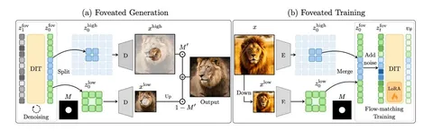

Разбираем статью, в которой попробовали использовать идею, отчасти навеянную анатомией человеческого глаза.
Наш глаз в отличие от камеры не воспринимает всю картинку в одинаково высоком разрешении. На сетчатке есть небольшой участок — фовеа, где клетки расположены с очень большой плотностью. Именно этой частью глаза мы различаем мелкие детали, а по краям информация гораздо менее подробная. В голове всё это собирается в полноценное изображение.
Плюс такого устройства в том, что мы можем обращать внимание на супермелкие детали и при этом иметь широкий угол обзора. То есть одновременно обрабатывать сигнал в высоком и низком разрешении и не тратить ресурсы на обработку всего мира в супервысоком разрешении.
В технике эта идея уже применяется в foveated-рендеринге. Например, в VR область, куда смотрит пользователь, рисуют в более высоком разрешении, а остальную — в более низком.
Авторы переносят эту идею на генерацию. Они позиционируют свою работу как способ дешёвого ускорения генеративной модели (для картинок в 1,5–2 раза, для видео — в 3,5, потому что пространственно-временное внимание дороже) без особых потерь качества.
Метод рассчитан на сценарии, где известно, куда смотрит пользователь: айтрекинг в VR, стриминговая генерация, симуляторы. Маска приходит извне, а не выводится из картинки.
При генерации, кроме промта, есть condition — foveation mask, который говорит, где нужно нарисовать в высоком разрешении. Модель генерирует сигнал в двух разрешениях: кусочек в high res и остальную часть в low res.
Получается полноценный латент, который переорганизуется на грид. High-res-кусочек декодируется отдельно, а вся остальная картинка собирается на грид более низкого разрешения и тоже декодируется. После этого две компоненты просто складываются с весами маски и получается комбинированное изображение. Декодер берут готовый, он ничего не знает об этих манипуляциях, поэтому на границе могут появляться артефакты. Авторы выносят цветовые артефакты на границе в ограничения и предлагают переделать VAE под декодирование смешанного разрешения.
Нетривиальный кусочек работы посвящён кодированию позиций токенов с учётом информации, что где-то у нас высокое разрешение, а где-то низкое. Мы привыкли, что сигнал — это равномерная решётка, но позиционные эмбеддинги позволяют ставить внутрь позиции не только равномерных, но и нужных нам узлов. В high-res-части позиции кодируются как обычно, а в low-res-кусочках делаются пропуски. В итоге информация о том, как конкретный токен соотносится с картинкой, сводится к позиционному кодированию.
Просто запустить предобученную модель на такой неоднородной сетке не выходит, так как масштабы и структура в двух зонах расходятся, объекты дублируются. Поэтому авторы дообучают модель через LoRA на мишени, консистентной по построению: картинку и её уменьшенную копию кодируют VAE независимо, а потом сливают токены по маске, так обе части заведомо описывают один и тот же контент.
Большую часть экспериментов делают со случайными масками: так модель учится работать с произвольной маской при генерации (замеры производят на фиксированной центральной). Но если для обучения брать маски из модели, которая оценивает, куда посмотрит человек, выходит неожиданный эффект: модель начинает сама размещать значимые объекты внутри фовеа. Фактически бесплатный грубый контроль композиции, в том числе многообъектный, если маска состоит из нескольких несвязных кусков.
В результатах авторы показывают, что просадки по качеству особо нет, а выигрыш по скорости есть. Дальше уже интересно, можно ли сделать так, чтобы модель сама без подсказок по мере генерации понимала, где ей нужно больше токенов, а где меньше. На первых шагах диффузии мы ничего не знаем о картинке, но потом постепенно появляется какая-то грубая компоновка: становится понятно, что здесь будет трава, здесь небо, здесь какой-то объект. По нему уже видно, где нужны детали, а где можно сэкономить.
Разбор подготовил
CV Time
